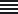

<app-header title="{{ 'OBSERVATION_LIST.TITLE' | translate }}"></app-header>
<ion-content>
  <app-geo-fab slot="fixed"></app-geo-fab>
  <app-refresh-with-cancel [refreshFunc]="refreshFunc"></app-refresh-with-cancel>
  <ion-item-divider>
    <h3 class="ion-text-uppercase header">{{'OBSERVATION_LIST.TITLE' | translate }}</h3>
  </ion-item-divider>
  <ion-grid class="filter-panel">
    <ion-row>
      <ion-col>
        <ion-segment
          [value]="useMapExtentFilter$ | async"
          (click)="toggleFilterByMapView($event)"
          class="map-extent-filter-toggle segment-button-class"
          mode="ios"
          [disabled]="disableMapExtentToggle$ | async"
        >
          <ion-segment-button value="mapBorders">
            <ion-label>{{'OBSERVATION_LIST.TOGGLE_BUTTON_OBSERVATIONS_IN_MAP_VIEW' | translate}}</ion-label>
          </ion-segment-button>
          <ion-segment-button value="all">
            <ion-label>{{'OBSERVATION_LIST.TOGGLE_BUTTON_OBSERVATIONS_ALL' | translate}}</ion-label>
          </ion-segment-button>
        </ion-segment>
      </ion-col>
      <ion-col>
        <!--titelen -->
      </ion-col>
      <ion-col>
        <div *ngIf="!isNative" class="button-container">
          <span>{{'OBSERVATION_LIST.VIEW_TYPE' | translate}}:</span>
          <button
            id="list"
            [ngClass]="viewType$.getValue() == 'list' && 'active'"
            (click)="changeViewType($event.currentTarget.id)"
          >
            
          </button>
          <button
            id="grid"
            [ngClass]="viewType$.getValue() == 'grid' && 'active'"
            (click)="changeViewType($event.currentTarget.id)"
          >
            
          </button>
        </div>
      </ion-col>
      <ion-col class="order-by-select">
        <ng-container *ngIf="orderBy$ | async as orderBy">
          <div class="select-wrapper">
            <span>{{'OBSERVATION_LIST.SORT_BY_TEXT' | translate}}:</span>
            <ion-select (ionChange)="handleChangeSorting($event)" [value]="orderBy" [interface]="popupType">
              <ion-select-option value="DtObsTime">
                {{'OBSERVATION_LIST.SORT_BY_OBS_TIME' | translate}}</ion-select-option
              >
              <ion-select-option value="DtChangeTime"
                >{{'OBSERVATION_LIST.SORT_BY_CHANGE_TIME' | translate}}</ion-select-option
              >
            </ion-select>
          </div>
        </ng-container>
      </ion-col>
    </ion-row>
  </ion-grid>

  <ng-container *ngIf="!(isFetchingObservations$ | async); else skeleton">
    <ng-container *ngIf="viewType$ | async as viewType">
      <ng-container *ngIf="showObservations$ | async">
        <ng-container *ngIf="registrations$ | async as registrations">
          <ion-list class="loaded" *ngIf="registrations?.length > 0; else empty">
            <app-observation-list-view
              *ngIf="viewType==='list'"
              [registrations]="registrations"
            ></app-observation-list-view>
            <app-images-grid *ngIf="viewType==='grid'" [attachments]="registrations"></app-images-grid>
            <ion-infinite-scroll (ionInfinite)="loadNextPage()" [disabled]="shouldDisableScroller$ | async">
              <ion-infinite-scroll-content> </ion-infinite-scroll-content>
            </ion-infinite-scroll>
          </ion-list>
        </ng-container>
      </ng-container>
    </ng-container>
  </ng-container>

  <ng-template #skeleton>
    <ng-container *ngIf="viewType$ | async as viewType">
      <ng-container *ngIf="viewType==='list'">
        <app-observation-skeleton></app-observation-skeleton>
        <app-observation-skeleton></app-observation-skeleton>
        <app-observation-skeleton></app-observation-skeleton>
      </ng-container>
      <ion-list *ngIf="viewType==='grid'" class="skeleton-list">
        <ion-skeleton-text animated *ngFor="let _ of fakeArray" class="img-skeleton"></ion-skeleton-text>
      </ion-list>
    </ng-container>
  </ng-template>

  <ng-template #empty>
    <ion-grid *ngIf="!(error$ | async) && isNative" class="full-grid">
      <ion-row class="full-grid-row">
        <div class="center">
          <svg-icon class="rectangle" src="/assets/images/empty-states/rectangle.svg"></svg-icon>
          <svg-icon class="pin1" src="/assets/images/empty-states/pin.svg"></svg-icon>
          <svg-icon class="pin2" src="/assets/images/empty-states/pin.svg"></svg-icon>
          <svg-icon class="pin3" src="/assets/images/empty-states/pin.svg"></svg-icon>
        </div>
      </ion-row>
      <ion-row class="error ion-text-center ion-margin-horizontal">
        <h2>{{ "OBSERVATION_LIST.NO_OBSERVATIONS" | translate }}</h2>
      </ion-row>
      <ion-row class="error ion-text-center ion-margin-horizontal">
        <h3 class="ion-text-wrap">{{ "OBSERVATION_LIST.NO_OBSERVATIONS_TEXT" | translate }}</h3></ion-row
      >
    </ion-grid>
    <ion-grid *ngIf="!(error$ | async) && !isNative" class="full-grid">
      <ion-row class="error ion-text-center ion-margin-horizontal">
        <h2>{{ "OBSERVATION_LIST.NO_OBSERVATIONS" | translate }}</h2>
      </ion-row>
      <ion-row class="error ion-text-center ion-margin-horizontal">
        <h3 class="ion-text-wrap">{{ "OBSERVATION_LIST.NO_OBSERVATIONS_TEXT_WEB" | translate }}</h3></ion-row
      >
    </ion-grid>
    <ion-grid *ngIf="error$ | async">
      <ion-row>
        <ion-col class="error ion-text-center ion-margin-horizontal">
          <h2>{{ "OBSERVATION_LIST.SEARCH_ERROR_TITLE" | translate }}</h2>
          <h3 class="ion-text-wrap">{{ "OBSERVATION_LIST.SEARCH_ERROR_DESCRIPTION" | translate }}</h3>
        </ion-col>
      </ion-row>
    </ion-grid>
  </ng-template>
</ion-content>
<app-add-menu></app-add-menu>
